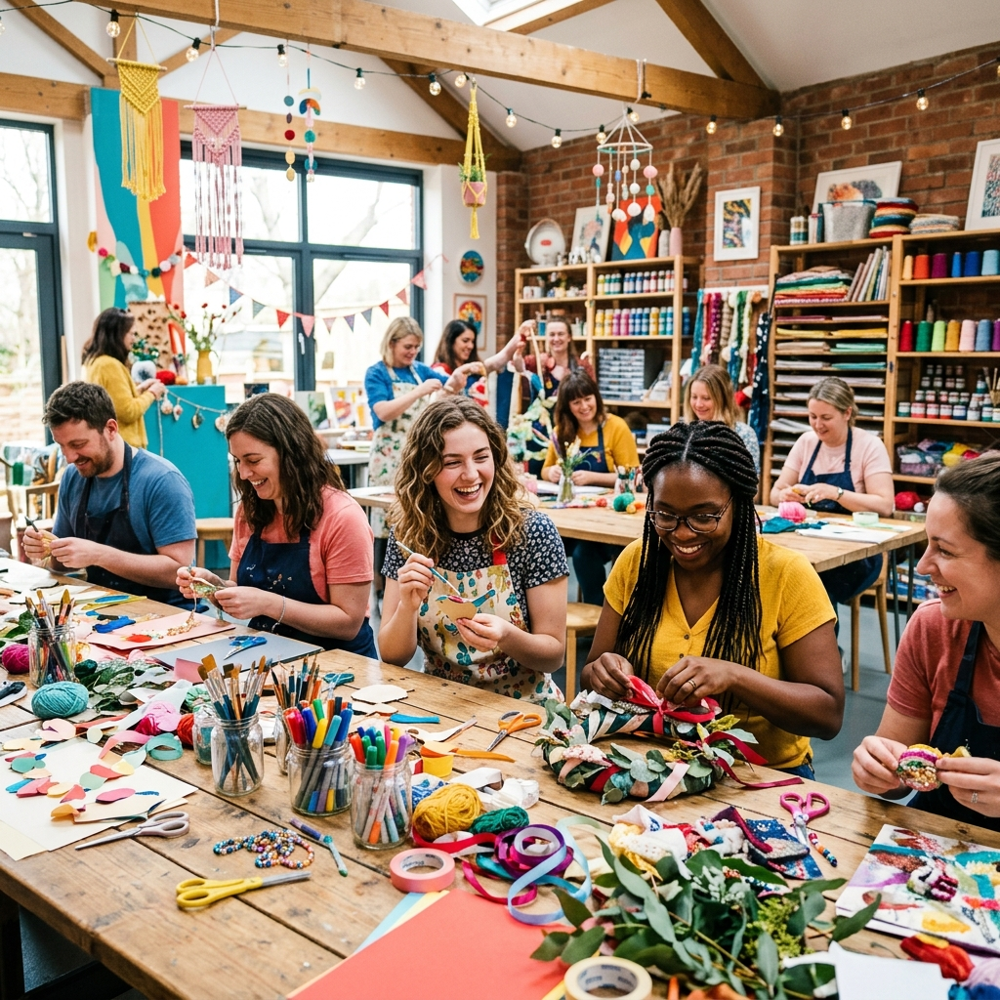
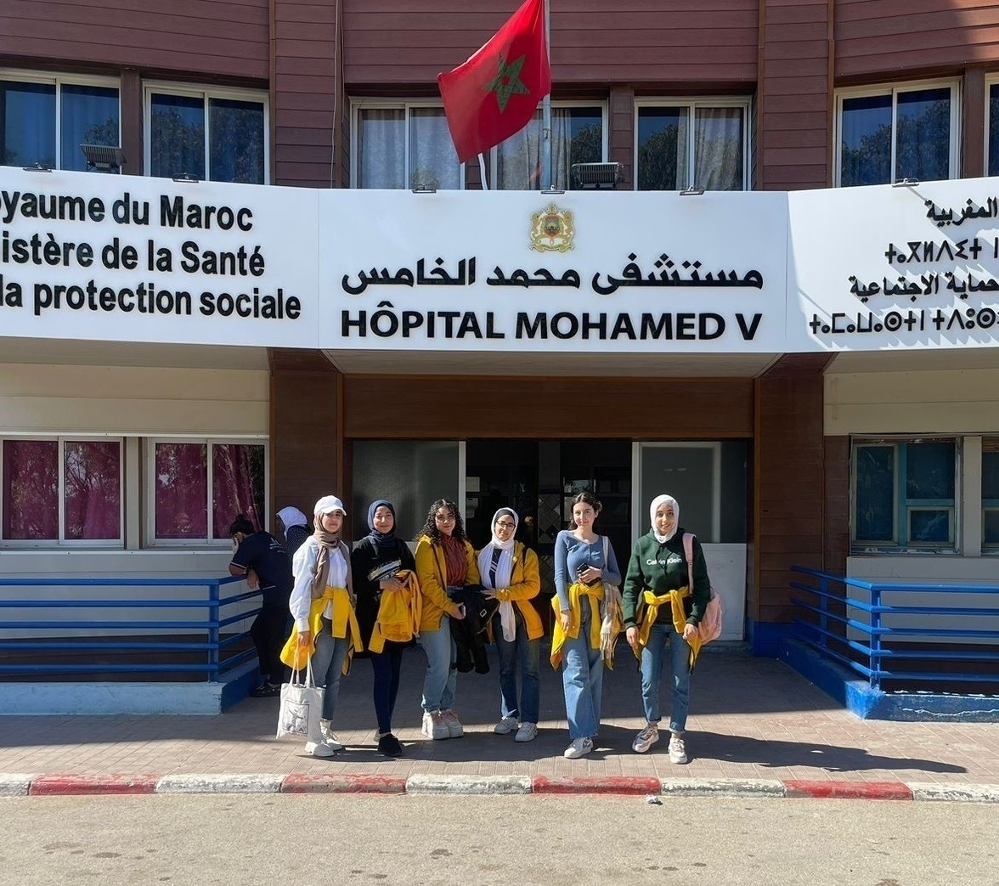
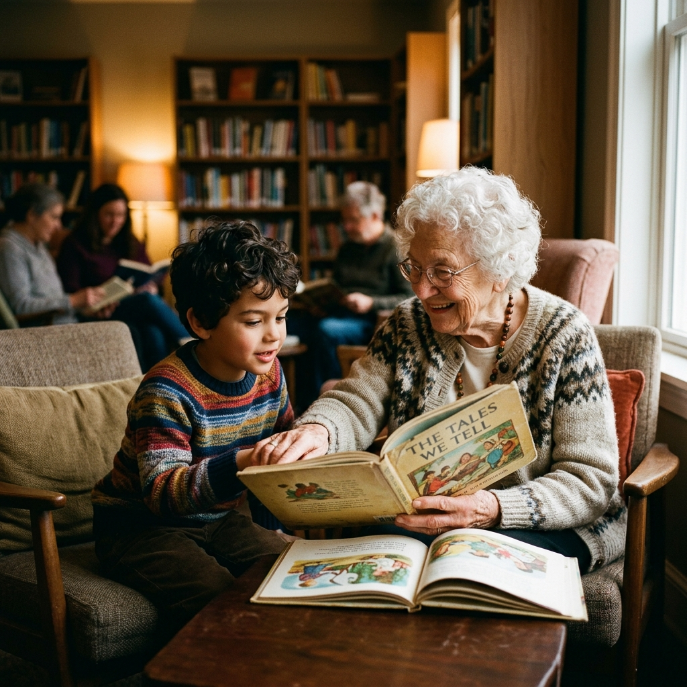

What We Do

Gentle Prints
A social initiative that focuses on children with special needs, including autistic children, those with Down syndrome, and children in hospitals. Through this project, we organize visits where we spend time with them and create workshops that help them develop useful skills for their future while bringing them joy. Our goal is to support them, make them feel included, and spread happiness.

Decoration Workshop
In a decoration workshop, participants design and produce decorative objects for events in a creative setting. It entails organising events, specifying their duration and specifics, and selecting appropriate themes and resources. In order to guarantee a successful and well-organized event, it also entails getting all the components ready beforehand.

Bright Minds
Bright Minds is a youth-led project dedicated to supporting and inspiring students in primary schools, high schools, and colleges. We organize visits twice a week, during which we meet students and engage with them through interactive and educational sessions. During these visits, we share useful knowledge about study methods, academic orientation, and personal development, while also encouraging open discussion and participation. Our goal is to motivate students, help them build confidence, and guide them toward making better decisions for their future.

Reading Circles
Intimate storytelling sessions where volunteers connect with children and the elderly one-on-one.